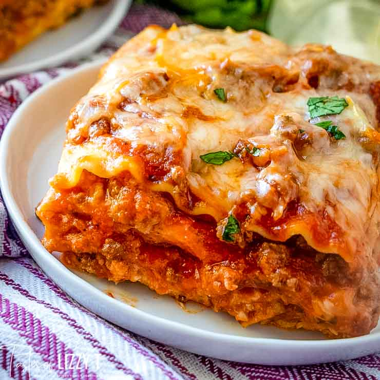

Lasagna recipe

Description
This easy no boil lasagna recipe uses two meats and three cheeses for amazing flavor. Your favorite jarred spaghetti sauce keeps it simple!
Ingredients
- 1 pound ground beef
- ½ sweet italian sausage
- 48 ounces spaghetti sauce
- 1 teaspoon minced garlic
- 15 ounces ricotta cheese
- 3 cups shredded mozarella cheese
- ¾ grated parmesan
- 3 teaspoons dried parsely
- 2 large eggs
- salt and pepper to taste
- 12 lasagna noodles
- ¼ cup water
How to
- Preheat the oven to 350°F.
- In a large skillet over medium heat brown the ground beef and sausage together. Drain off and discard any fat.
- Add the minced garlic and spaghetti sauce. Simmer for 5 minutes.
- In a large bowl, mix together the ricotta, 2 cups of the mozzarella cheese, eggs, ½cup of grated Parmesan cheese, dried parsley, salt and pepper. Mix well.
- To assemble, spray a 9×13 baking pan with cooking spray.
- Spread ¾ cup of sauce on the bottom of the baking pan.
- Cover the bottom with 3 uncooked lasagna noodles.
- Top with ⅓ of the cheese mixture and ¼ of the sauce.
- Repeat layers (noodles, cheese, sauce, noodles, cheese, sauce).
- Top with 3 noodles, remaining sauce, remaining 1 cup of mozzarella and Parmesan cheese.
- add the ¼ cup of water.
- Spray a sheet of aluminium foil with cooking spray. Cover with the pan with aluminum foil (sprayed side down). This spray prevents the cheese from sticking.
- Bake for 50 minutes. Uncover and bake an additional 10 minutes.
- Let the lasagna stand for 5 to 10 minutes before cutting and serving.